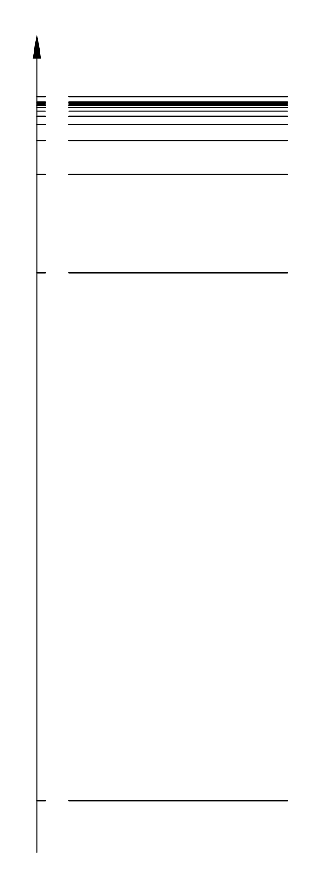
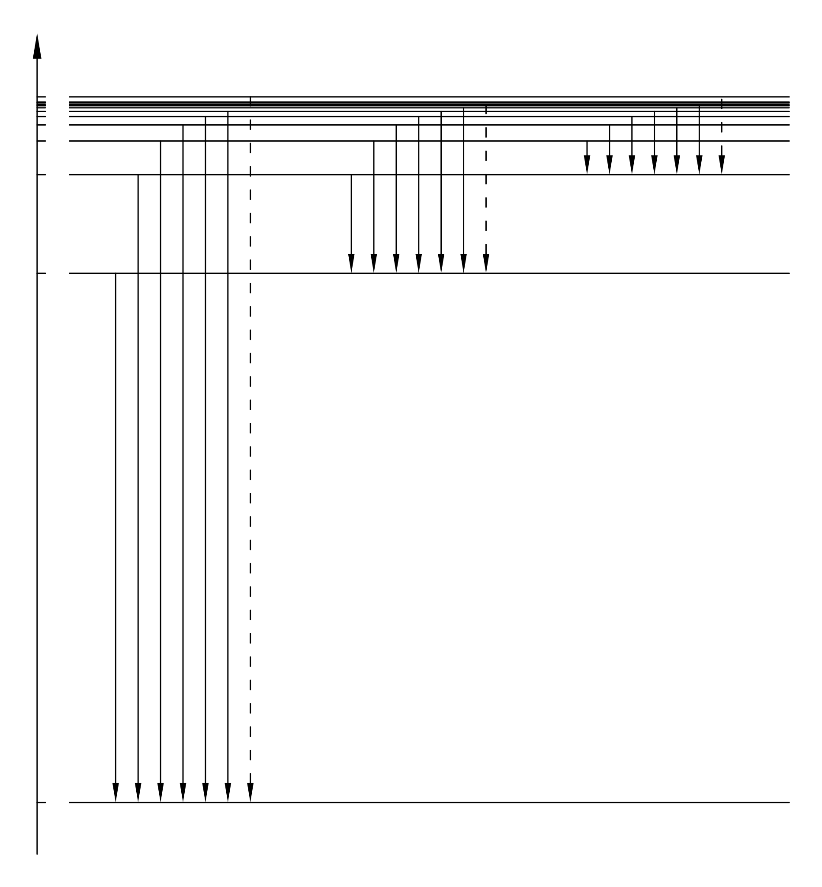
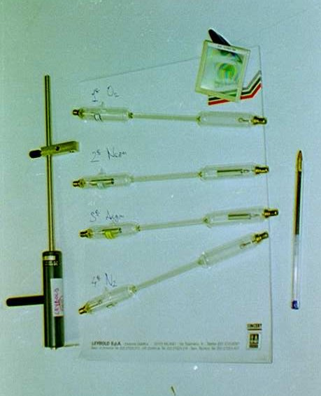
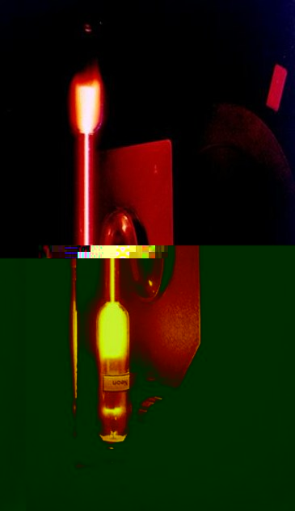
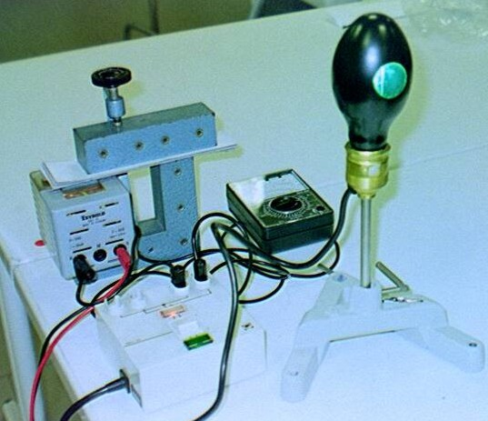
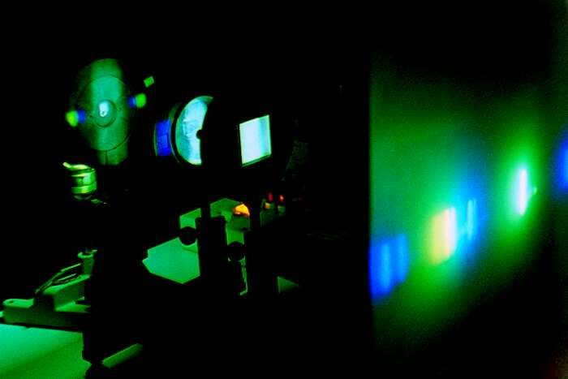

Capitolo 9
Spettri atomici di emissione
Nella sesta scheda abbiamo visto che l’energia dell’atomo di idrogeno è quantizzata; ora ci chiediamo cosa succede quando un atomo passa da uno stato energetico superiore ad uno inferiore?
Per capire questo fenomeno è necessario studiare la Meccanica Quantistica Relativistica, comunque per ora ci basta sapere due cose:
primo, che quando un atomo riceve una certa energia da un sistema esterno e si porta in uno stato “eccitato”, cioè uno stato ad energia superiore, non rimane a lungo in questa condizione ma “decade” in uno stato di energia più bassa in un tempo brevissimo;
secondo, quando l’atomo decade in uno stato di energia inferiore, emette un fotone con energia pari alla differenza .
In base alla relazione di Einstein  noi possiamo determinare l’energia di un fotone misurando la frequenza dell’onda elettromagnetica associata. Dunque, mettendo insieme questi fatti, abbiamo un metodo per determinare le differenze di energia tra i vari stati di un atomo.
noi possiamo determinare l’energia di un fotone misurando la frequenza dell’onda elettromagnetica associata. Dunque, mettendo insieme questi fatti, abbiamo un metodo per determinare le differenze di energia tra i vari stati di un atomo.
Descrizione di principio dell’esperimento.
Si prende la sostanza che si vuole analizzare e la si porta allo stato gassoso, in questo modo abbiamo un insieme di atomi indipendenti tra di loro.
Si fornisce energia a questi atomi in modo da “eccitarli”, cioè in modo da portarli ad uno stato energetico superiore.
Si raccoglie la luce emessa dagli atomi e si misurano le varie frequenze di cui è composta.
In base alla relazione di Einstein  si derivano i vari dislivelli energetici dell’atomo sotto studio.
si derivano i vari dislivelli energetici dell’atomo sotto studio.
Per misurare le frequenze si può usare un reticolo di diffrazione che produce il primo massimo ad un angolo che dipende dalla frequenza della luce incidente:
Se inviamo un fascio di luce prodotta dagli atomi verso un reticolo di diffrazione, al di là del reticolo abbiamo una separazione del fascio in varie parti monocromatiche, ogni singola parte sarà deflessa con un angolo diverso; misurando gli angoli di diffrazione si determinano le frequenze di cui è composto il fascio.
L’atomo più semplice che ha anche lo spettro più semplice è l’atomo di idrogeno. I livelli energetici previsti dalla teoria per l’atomo di idrogeno sono dati dalla formula e sono diagrammati nella figura 1; la figura 2 riporta tutti i possibili salti energetici tra un livello superiore ad uno inferiore (ovviamente i possibili salti energetici sono infiniti, noi ne abbiamo rappresentati solo alcuni).


Si possono distinguere diverse serie di salti corrispondenti a diverse serie di lunghezze d’onda. La serie di Lyman si trova nell’ultravioletto, la serie di Balmer è stata la prima ad essere osservata e si trova nel visibile, la serie di Paschen si trova nell’infrarosso. Per osservare le serie di Lyman e di Paschen bisogna utilizzare dei particolari tipi di lastre fotografiche, mentre la serie di Balmer può essere osservata direttamente ad occhio.
Apparati sperimentali.
Gli atomi che possono essere analizzati più facilmente sono quelli che formano un gas, infatti questi atomi si trovano già allo stato gassoso, ed inoltre è molto facile eccitarli. La foto di figura 3 mostra quattro tubicini di vetro nei quali ci sono quattro gas diversi, l’ossigeno, il neon, l’argon e l’azoto; ad una pressione di circa  atmosfere. Agli estremi di questi tubicini ci sono due elettrodi; applicando una tensione di circa 1000V a questi elettrodi si ottiene una scarica elettrica nel gas che è in grado di eccitare gli atomi.
atmosfere. Agli estremi di questi tubicini ci sono due elettrodi; applicando una tensione di circa 1000V a questi elettrodi si ottiene una scarica elettrica nel gas che è in grado di eccitare gli atomi.

La figura 4 mostra il tubo contenente neon acceso. La figura 5 mostra il banco ottico utilizzato per focalizzare il fascio di luce; abbiamo da sinistra verso destra: il tubo contenente neon, due lenti convergenti che focalizzano il fasci, un reticolo di diffrazione ed uno schermo bianco. La figura 6 mostra l’immagine ottenuta sullo schermo, sono visibili le righe relative ai diversi colori.



Oltre ai tubi di scarica, per eccitare gli atomi, si possono usare anche dei sistemi più efficienti; la figura 7 per esempio mostra una lampada ai vapori di mercurio che emette una luce molto più intensa di quella emessa dai tubi di scarica.

Le figure 8, 9 e 10 mostrano le immagini spettrali che si ottengono dalla lampada ai vapori di mercurio.



Per ottenere la luce emessa dall’idrogeno si usa una particolare lampada chiamata lampada di Balmer e che è rappresentata in figura 11.

Per eseguire delle misure con un certo grado di precisione si deve usare un sistema ottico chiamato spettrometro a goniometro che è rappresentato in figura 12. Le misure eseguite in questo modo sono in perfetto accordo con i risultati teorici ottenuti con l’equazione di Schrödinger.

Altre immagini del capitolo